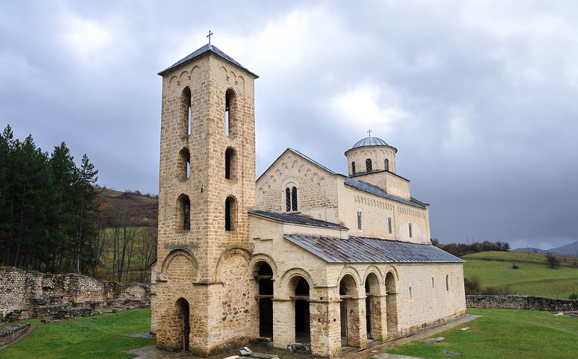

Стеван Ст. Мокрањац: Једанаеста Руковeт (1905)
Stevan St. Mokranjac: Onzième Guirlande (1905)
"Песме из Старе Србије - Chants de Vieille Serbie"

Манастир Сопоћани - Monastère de Sopoćani
|
|
|
|
Везе ка песмама 1 - 4 -oOo- Liens vers les chants 1 - 4
1.
Писаше ми, Стано, мори - Ils m'ont écrit, Stana
|

Једанаеста Руковeт
Изводи Хор РТВ-а Београд. Диригент: Младен Јагушт (мајор)
Хор Радио-телевизије Београд ред. Младен Јагушт (1. мај)
NOTE
|
Својом формом (Allegro-Adagio-Scherzo-Finale) ова руковет подсећа на Oсму Pуковет. Осећају јединства доприноси то што су прва и последња песма у Еф-дуру. Руковет почиње веселом песмом „Писаше ме, Стано мори“, где се смењују дијалошке фразе мушког и женског хора. Наредна мелодија, „Црна горо“, веома је сетног карактера. Трећа песма „Ој, Ленко, Ленко“ истиче се ритмичношћу у петчетвртинском такту. После кратког понављања претходне музичке теме, Pуковет се завршава блиставим колом „Калугере, црна душо“. Izvor: Википедиjа |
11. Rukovet, Chansons de l'ancienne Serbie (1905) Par leur structure (Allegro-Adagio-Scherzo-Finale) les 11e et 8e Rukovet sont très similaires. De plus, la première et la dernière chanson dans les deux pièces sont écrites en fa majeur. La Rukovet commence par la chanson joyeuse "Pisaše me, Stano mori", qui prend la forme d'un dialogue entre les voix d'hommes et les voix de femmes. La mélodie suivante "Crna goro" a un caractère mélancolique appuyé. La troisième chanson "Oj, Lenko, Lenko" surprend par son rythme en cinq temps (5/4). Après une brève répétition de la chanson précédente, la 11ème Rukovet se termine par un kolo endiablé: "Kalugere, crna dušo!". Source: Wikipédia |